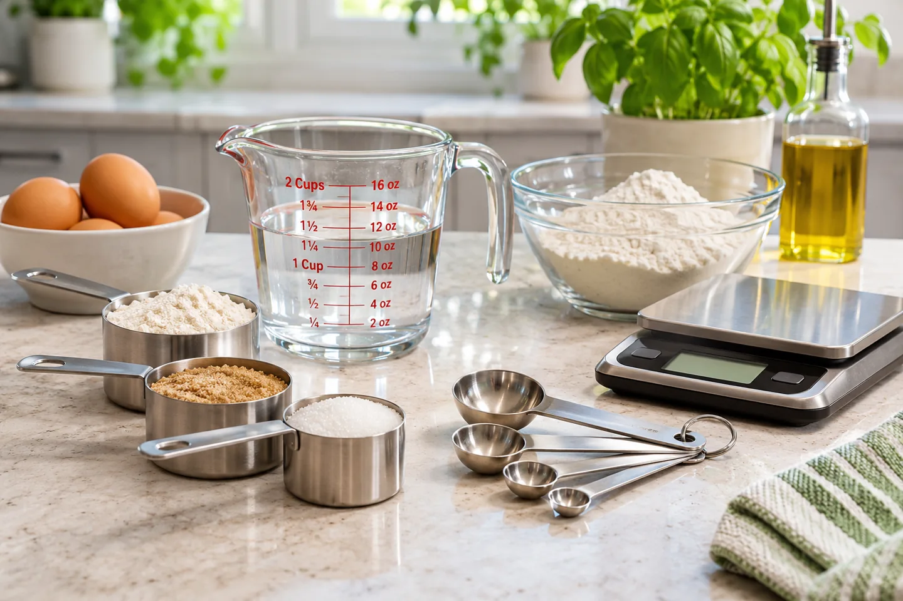
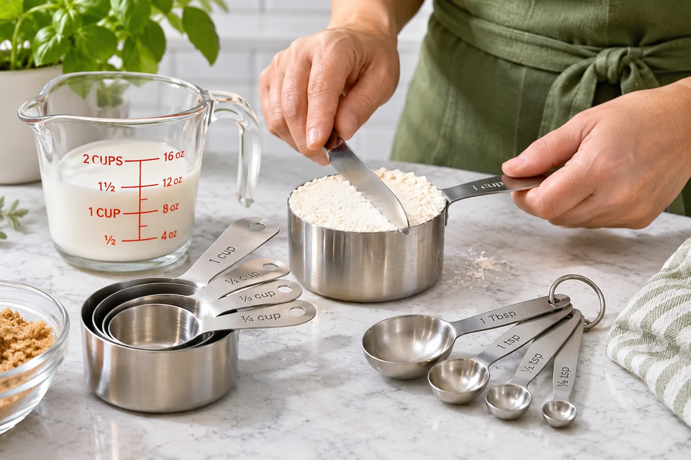
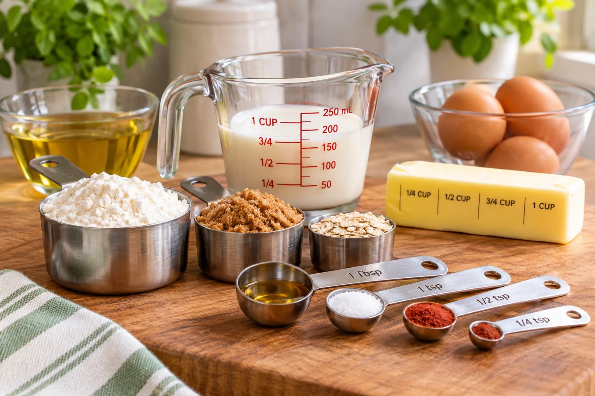

A cup of flour, eight fluid ounces of milk, and eight ounces of butter might sound interchangeable—but they measure different things. Here's how common kitchen measurements work, which tools to use, and how to avoid everyday measuring mistakes.

Volume vs. weight: what is the difference?
↑ TopicsVolume — how much space it takes up
Use measuring cups, spoons or a marked liquid jug. One U.S. customary cup contains 8 U.S. fluid ounces of space (about 237 mL).
Weight — how heavy it is
Use a kitchen scale. One ounce by weight is about 28.35 grams, regardless of whether you are weighing flour, cheese or sugar.
Example: One cup of water and one cup of flour occupy approximately the same volume, but they don't weigh the same. That's why “1 cup = a fixed number of grams” is not a universal cooking conversion.
How to measure dry ingredients
↑ TopicsFor flour, sugar and similar ingredients, use dry measuring cups designed to be filled to the top and leveled. A recipe may specify a special method—follow it when it does.
- Fluff: Stir flour gently in its container to loosen it before measuring.
- Spoon: Spoon flour into a dry measuring cup without pressing it down.
- Level: Sweep a straight edge across the cup to remove the excess.
- Don't pack unless instructed: Brown sugar is frequently measured packed, but flour usually isn't.

Why it matters: Scooping flour straight from a bag can compact it, so two people measuring “one cup” may end up with different amounts. A scale avoids much of that variation.
How to measure liquids accurately
↑ TopicsUse a marked liquid measuring jug
Pour the liquid into a clear jug on a level counter. Check the amount against the markings—not against how full it looks from above.
Read at eye level
Bend down to the measuring line. For water and similar liquids, read the bottom of the curved liquid surface (the meniscus), rather than looking down from above.

Small amounts: For a teaspoon of vanilla or a tablespoon of oil, use a measuring spoon instead of trying to estimate the amount inside a large jug.
Teaspoons, tablespoons and cups explained
↑ TopicsThese familiar U.S. kitchen relationships are useful when you need to substitute one measuring tool for another.
| Measure | Equivalent |
|---|---|
| 1 tablespoon (tbsp) | 3 teaspoons (tsp) |
| ¼ cup | 4 tablespoons |
| ⅓ cup | 5 tablespoons + 1 teaspoon |
| ½ cup | 8 tablespoons |
| 1 U.S. cup | 16 tablespoons = 8 U.S. fluid ounces |
| 1 U.S. fluid ounce | About 29.6 milliliters |
| 1 U.S. cup | About 237 milliliters |
| 1 ounce (weight) | About 28.35 grams |
Recipe reminder: Cup and spoon conventions differ internationally. A metric cup is often 250 mL, while the U.S. customary cup is about 237 mL. Australian tablespoons are commonly 20 mL, rather than roughly 15 mL. Check the recipe's country of origin when precision matters.
When a kitchen scale is the better tool
↑ TopicsScales are particularly helpful in baking and for sticky or awkward ingredients. They let you measure directly in grams without relying on an ingredient-specific cups-to-grams estimate.
- Place an empty bowl or container on the scale.
- Press Tare or Zero to remove the container's weight.
- Add the ingredient until the display reaches the recipe's required weight.
- Tare again before the next ingredient, if your recipe and mixing method allow it.
Example: If a recipe says “120 g flour,” weigh 120 g. Don't assume every cup of flour is exactly 120 g; that conversion depends on the flour and measuring method.
Six measurement mistakes to avoid
Confusing oz with fl oz
An ounce (oz) usually indicates weight, while a fluid ounce (fl oz) indicates volume. They aren't interchangeable.
Scooping and packing flour
Use the method specified in the recipe. If none is given, spoon and level—or weigh it when a weight is provided.
Guessing from a spoon in the drawer
Ordinary eating spoons vary. Use standardized measuring spoons for a recipe's teaspoons and tablespoons.
Reading a jug from above
Set the jug on a level surface and bring your eyes to the measurement line.
Ignoring the recipe's region
U.S., Canadian metric and Australian recipes may use slightly different cup or tablespoon definitions.
Forgetting to tare the scale
If you don't zero out the bowl, its weight will be included in the reading.
Frequently asked questions
Is one cup always eight ounces?
One U.S. customary cup equals eight U.S. fluid ounces, a volume measurement. It does not mean every cup of food weighs eight ounces.
How many teaspoons are in a tablespoon?
There are three U.S. teaspoons in one U.S. tablespoon.
How many tablespoons are in one cup?
There are sixteen U.S. tablespoons in one U.S. customary cup.
Why do recipes give different gram values for a cup of flour?
Different flour types, brands and measuring techniques affect how much flour fits into a cup. When a recipe provides grams, using a scale is the most consistent approach.
Can I use a liquid measuring cup for flour?
You can measure flour by volume in a marked jug, but it is usually harder to fill and level consistently than a dry cup. For best results, use the tool intended for the ingredient—or a scale when a weight is specified.
Need more conversions? Visit our Kitchen Measurement Conversions Guide for additional cup, spoon, liquid, weight and oven-temperature reference tables.